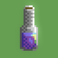
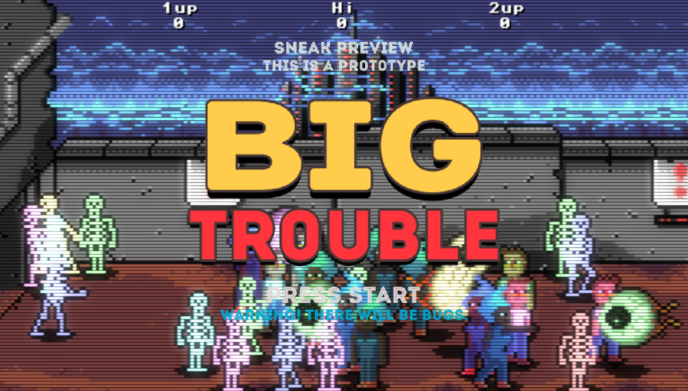
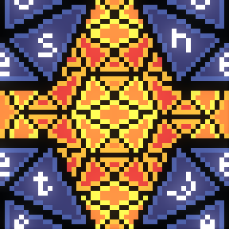
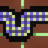
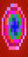
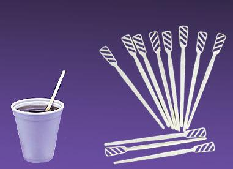
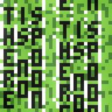

basic bottle by PixelGuff in 32x32 #pixelart using the C64 palette. Visit http://paint.lo4d.net/ to draw your own!

https://twitter.com/xranby/status/594523733378859008 @xranby What I think is happening is the setup code is failing to run intermittently, probably a timing problem, but I cant reproduce. :(
https://twitter.com/xranby/status/594191579574829056 @xranby Anything in the javascript console log?
Thanx to @Ga_Ma_Yo for great time last night.
Here are some before and after snapshots of us.

previous ghost by diet_toxin in 32x32 #pixelart using the Swanky32 palette. Visit http://paint.lo4d.net/ to draw …
previous ghost by Crustolio in 32x32 #pixelart using the Swanky32 palette. Visit http://paint.lo4d.net/ to draw y…
previous ghost by JetSet211 in 32x32 #pixelart using the Swanky32 palette. Visit http://paint.lo4d.net/ to draw y…
drafty sail by Crustolio in 48x48 #pixelart using the Swanky32 palette. Visit http://paint.lo4d.net/ to draw your…

drafty sail by xranby in 48x48 #pixelart using the Swanky32 palette. Visit http://paint.lo4d.net/ to draw your own!
linear talk by xranby in 16x16 #pixelart using the C64 palette. Visit http://paint.lo4d.net/ to draw your own!
linear talk by ithebatman in 16x16 #pixelart using the C64 palette. Visit http://paint.lo4d.net/ to draw your own!

linear talk by Crustolio in 16x16 #pixelart using the C64 palette. Visit http://paint.lo4d.net/ to draw your own!
https://twitter.com/sgtruck/status/593504470899695617 @sgtruck Technically that is something you are supposed to be able to do. But I never got around to actually making it happen... :)
linear talk by ABRAXAS in 16x16 #pixelart using the C64 palette. Visit http://paint.lo4d.net/ to draw your own!
dangerous infinity by ithebatman in 16x16 #pixelart using the NES palette. Visit http://paint.lo4d.net/ to draw y…

dangerous infinity by Crustolio in 16x16 #pixelart using the NES palette. Visit http://paint.lo4d.net/ to draw yo…
dangerous infinity by xranby in 16x16 #pixelart using the NES palette. Visit http://paint.lo4d.net/ to draw your …
https://twitter.com/idlemoor/status/593392083324563456 @idlemoor I believe civilised society has invented something called a "coffee stirrer". The uncivilised use a pen.

previous spoon by shi in 32x32 #pixelart using the Swanky16 palette. Visit http://paint.lo4d.net/ to draw your own!
